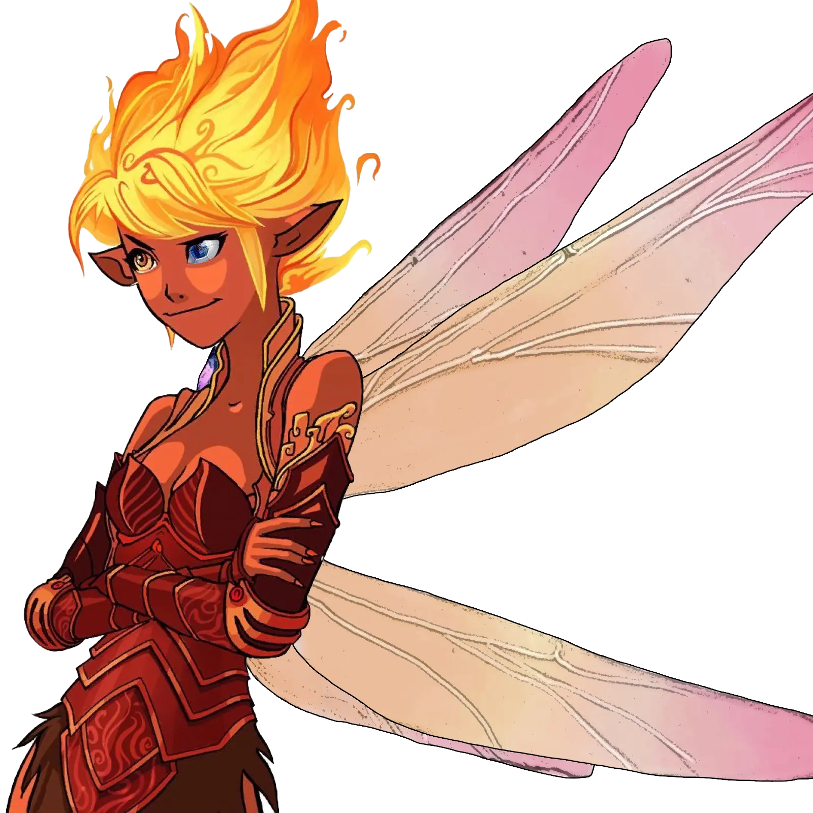
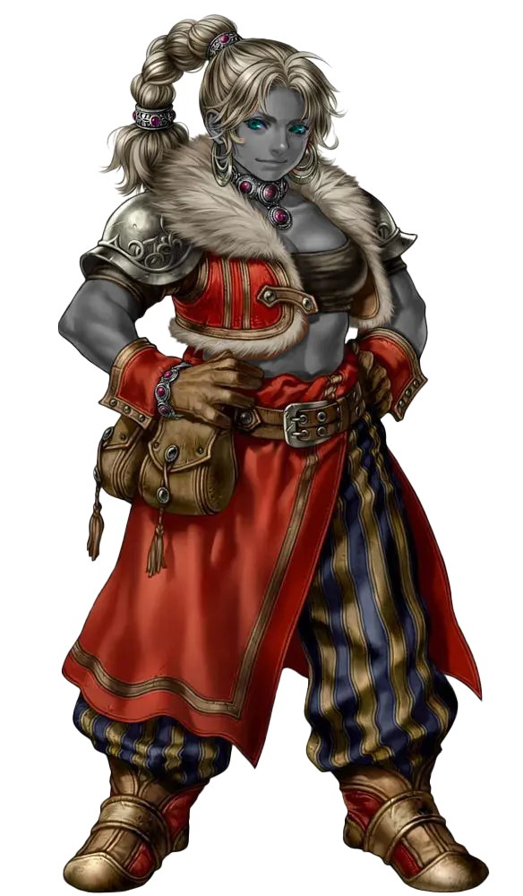
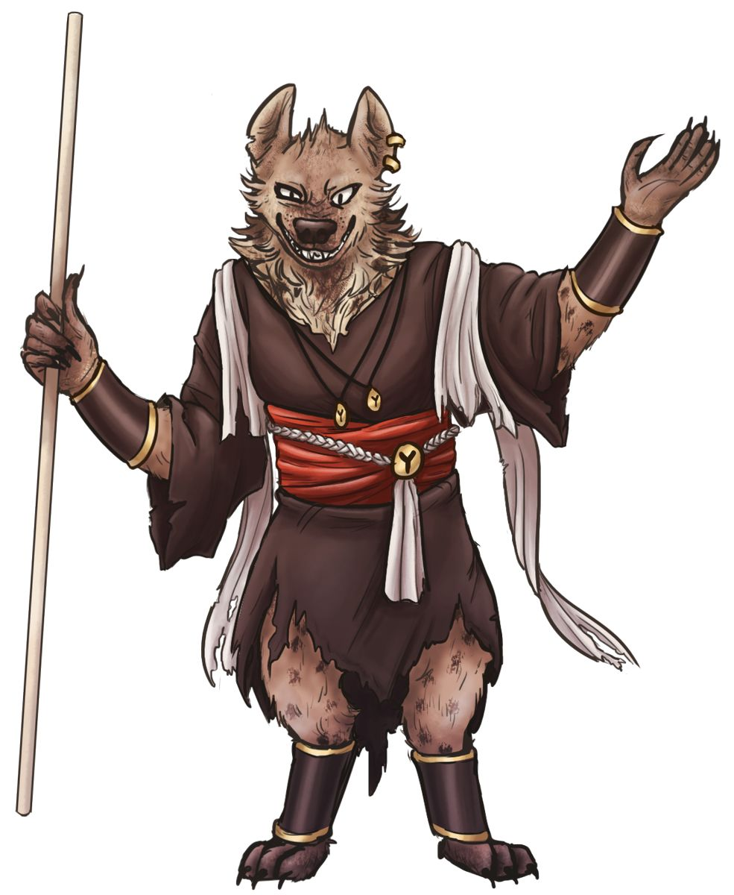

Campagne di Fillo
Avventurieri della Gilda
Personaggi Giocanti
Script vari
Andate a pgscripts per alcune web-app per i personaggi. Tipo il calcolo danni di Xandra, quella roba lì.
Rath
Salo
 Illustrazione di Pthumerian Dusk. Sì, è fatto apposta per il PG!
Illustrazione di Pthumerian Dusk. Sì, è fatto apposta per il PG!
Aeormaton*, paladino (vendetta)
[scrivere]
* Nome dell’ambientazione per i forgiati, dato che provengono universalmente dalle rovine della città antica di Aeor
Estia
Camilla

Fata F, stregone (magia selvaggia)
Minuscola fatina con capelli infuocati e un animo a tema, la sua magia innata a volte esplode fuori controllo. Ama il fuoco, forse troppo.
Un suo occhio è finto, ma ha davanti l’immagine magicamente animata di un dado.
Kess
Camilla

Duergar F, guerriero (samurai)
Nana dall’identità spesso celata dall’elmo vox camuffatore di voce. Ha un braccio prostetico con diverse sorprese, che può cambiare a suo piacimento.
Kethra
Camilla
Umana F, pistolero (moschettiere)*
[scrivere]
* Classe e sottoclasse da Valda’s Spire of Secrets, nome ENG gunslinger (musketeer)
Kor
Chiara

Drow (vacuo) F, ladro (esploratore)
Drow vacua, visibilmente non morta, anche se dall’aspetto un tempo adolescenziale. Estremamente di poche parole per ora, ma molto abile nella navigazione e nella caccia. Sembra poter camminare su i muri.
Nikolaya
Fede
Cangiante (aspetto drow) F, mago (illusione)
Giovane maga, che a quanto pare proviene dall’Impero Dwendaliano. Un’esperta illusionista, quando fa le sue magie dei tatuaggi sul suo braccio sembrano illuminarsi. Nome completo: Nikolaya Yankovic.
Il suo homunculus si chiama Galka, ed è abbastanza pallido.
In realtà proveniente da un’organizzazione semi-nascosta e semi-imperiale, e da cui si è allontanata, i Volstrucker, temibili agenti magici.
Xandra
Fede

Mezzorca (drow) F, guerriero (maestro di battaglia)
Enorme donna armata di falcione, di poche parole ma un mercenario abile.
È la madre di Tariss, che lascia spesso da sola per il lavoro.
Kaizner
Gimmy

Drow, monaco (page)
[scrivere]
Kir
Jack

Tiefling (zariel) M, barbaro (zelota)
Nome completo Lakerkir, forzuto tiefling che è sempre un buon compagno di bevute. È un seguace di Kord, il Signore delle Tempeste, la cui furia tonante incarna quando entra in ira.
Aris
Matte
Aasimar M, warlock (lama del sortilegio)
Lungo individuo umanoide dalla pelle azzurra, e dagli occhi senza pupille. Il suo patto con la Morte (nello specifico, Thanathos) è manifestato nella sua arma, una grande falce con un occhio. Caccia i non-morti che hanno violato il ciclo della vita. Abbastanza impulsivo, sembrerebbe.
Krieg
Red
Mezzelfa F, paladino / stregone
Visibilmente dall’armatura soldato dell’impero Dwendaliano, anche se dichiaratamente lo ha rinnegato, come si evince dallo stemma cancellato con il sangue. Ottime capacità anti-magiche.
Willow
Salo

Gnoll M, chierico (dominio della vita)
Enorme individuo completamente bendato, dall’aspetto minaccioso che in realtà cela una persona timida. La fede in Pelor, il Padre Sole guida i suoi notevoli poteri curativi.
È accompagnato da diverse creature (o circa): il suo mantello-mimic, e un piccolo elementale del tè, che come dice il nome, beh, fa il tè.
-
Adesso ha anche una sfera elementale di terra senziente.
-
Si è aggiunta una mazza da pesce al tutto.
{kind=link}
Pensionati
Lakario
Matte
Aasimar M, chierico (tomba)
Lungo individuo umanoide dalla pelle azzurra, e dagli occhi senza pupille. Venera la Regina dei Corvi, Matrona della Morte.
Xian
Gimmy

Goblin M, monaco (ego astrale)
Goblin cieco, con bende che coprono gli occhi, anche se ha una incredibile capacità di percepire i dintorni. Dopo l’addestramento nel monastero sui Monti Cinerei, viaggia per il mondo per acquisire conoscenza. Esperto di medicina.